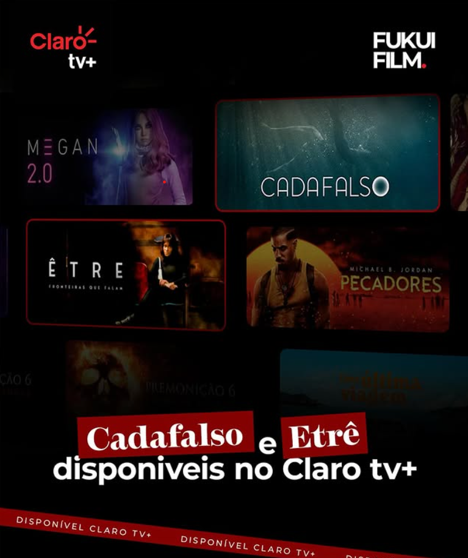

Em Foco
Filmes produzidos para permanecer além do momento em que foram lançados.
A FUKUIFILM desenvolve projetos audiovisuais autorais e comerciais, explorando narrativa, linguagem visual e direção cinematográfica. Obras exibidas em festivais, mostras e plataformas de streaming.
Cinema
Produções desenvolvidas entre direção, fotografia e narrativa.
Cada filme nasce de uma proposta visual específica. Mais do que registrar acontecimentos, os projetos buscam construir atmosferas, personagens e experiências capazes de permanecer na memória do espectador.
O processo envolve desenvolvimento criativo, planejamento de produção, direção de cena, fotografia, pós-produção e distribuição.
CADAFALSO
Produção marcada por forte construção estética e narrativa visual. O projeto explora identidade, percepção e relações humanas através de uma linguagem cinematográfica autoral.
Reconhecimento
Participações, indicações e exibições que ampliam o alcance das produções.
Festivais
Seleções oficiais, mostras competitivas e exibições especiais em eventos dedicados ao cinema independente.
Premiações
Indicações relacionadas à direção, fotografia, montagem e construção narrativa.
Exibições
Sessões presenciais, mostras culturais e circulação em ambientes voltados à formação audiovisual.
ÊTRE
Obra construída a partir da combinação entre fotografia, movimento e narrativa simbólica. O projeto reforça a busca constante por uma linguagem própria dentro do audiovisual contemporâneo.

Distribuição
Obras disponíveis em plataformas de alcance nacional e internacional, como Claro tv+ e Amazon Prime.
Parte do catálogo produzido pela FUKUIFILM alcançou distribuição em plataformas digitais, ampliando a presença das obras para públicos além do circuito tradicional de festivais.
Entre os canais de exibição estão serviços de streaming, mostras online e ambientes voltados à difusão audiovisual.
Próximos capítulos
Novos projetos continuam sendo desenvolvidos entre cinema, publicidade e narrativa visual.
A produção audiovisual permanece como uma das frentes centrais da FUKUIFILM, unindo estratégia, direção criativa e construção de experiências cinematográficas.